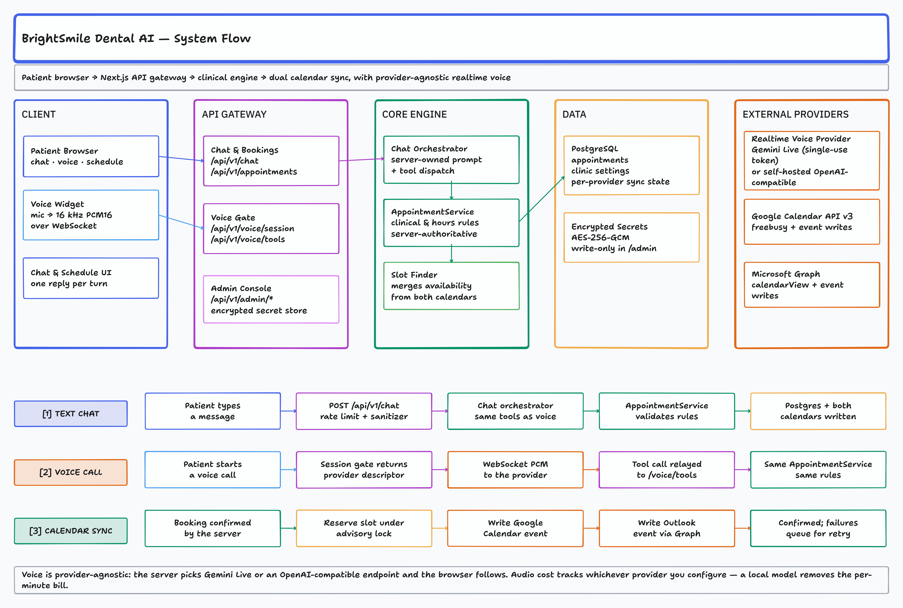

System composition, realtime audio mechanics, and the deterministic clinical boundary.

1. Selection. GET /api/v1/voice/session reports the configured
provider so the browser can pick a transport without spending a single-use token.
2. Descriptor. POST returns endpoint, model and credentials.
With Gemini the server mints a single-use token; with an OpenAI-compatible endpoint there is
no credential to hand out, so the role and tools still come from the server.
3. Media. Base64 PCM16 over WebSocket, 16 kHz up and 24 kHz down, no separate
STT hop.
4. Tools. The model emits a function call; the browser relays it to
POST /api/v1/voice/tools for server-side validation, then returns the result.
gemini-live •
openai-compatible (any Realtime GA endpoint, including a self-hosted
huggingface/speech-to-speech server)list_services •
check_availability • book_appointment •
cancel_appointment
Clinic hours (09:00–17:00) partition into 30-minute steps. A candidate must fit the whole
service (slot.end ≤ 17:00) and intersect no busy interval.
Concurrency control, per-provider synchronization state, credential storage, and what the deployment actually costs.
1. Availability query. Reads pending and confirmed bookings for the target
dentist and date.
2. Provider intersection. Merges database slots with live Google and
Microsoft Graph busy intervals.
3. Atomic reservation. Inside a transaction, take a transaction-scoped
advisory lock keyed by dentist and date, re-check overlap, then insert a
pending reservation. The losing transaction gets
SlotUnavailableError and the assistant offers the next slot.
4. Convergence. The row becomes confirmed only after every
provider succeeds; retries are claimed with a lease so overlapping runs cannot double-process.
v3/freeBusy batch queries. RFC3339 UTC strings with a trailing Z.
In-memory OAuth token caching with proactive refresh. Booking writes use caller-supplied event
IDs and PUT, so a retry upserts instead of duplicating.
calendarView via Entra ID. Drains multi-page @odata.nextLink
results. Normalizes dateTimeTimeZone payloads to UTC ISO-8601. An ambiguous create
is flagged needs_manual_reconciliation rather than retried blindly.
resolveCalendarProvider() builds both adapters and fails closed: missing
credentials or incomplete dentist mappings throw instead of silently skipping a calendar.
Only an explicit CALENDAR_PROVIDER=none disables external calendars.
A single monthly figure would have to assume a voice provider, an audio-minute volume, and a per-minute rate. Those three assumptions set most of the result, and the native one can be zero. Quoting a total without them is a number, not an estimate.
Price the deployment against the providers you configure. A worked per-minute model with every
assumption stated is kept in docs/INTERNAL_ARCHITECTURE_AND_COST.md.
Both columns run the same application code; the choice is configuration
(GEMINI_API_KEY vs. OPENAI_COMPATIBLE_VOICE_URL), not a fork. No latency
figure in this document was produced by a benchmark run — measure on the hardware that will serve patients.